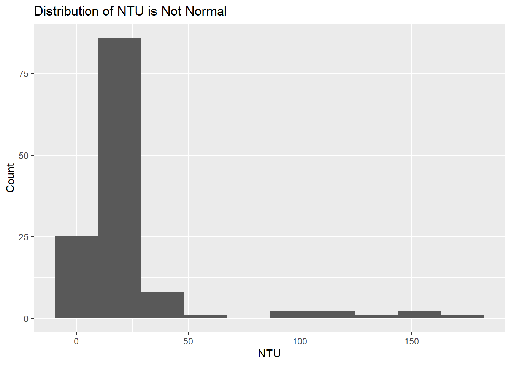
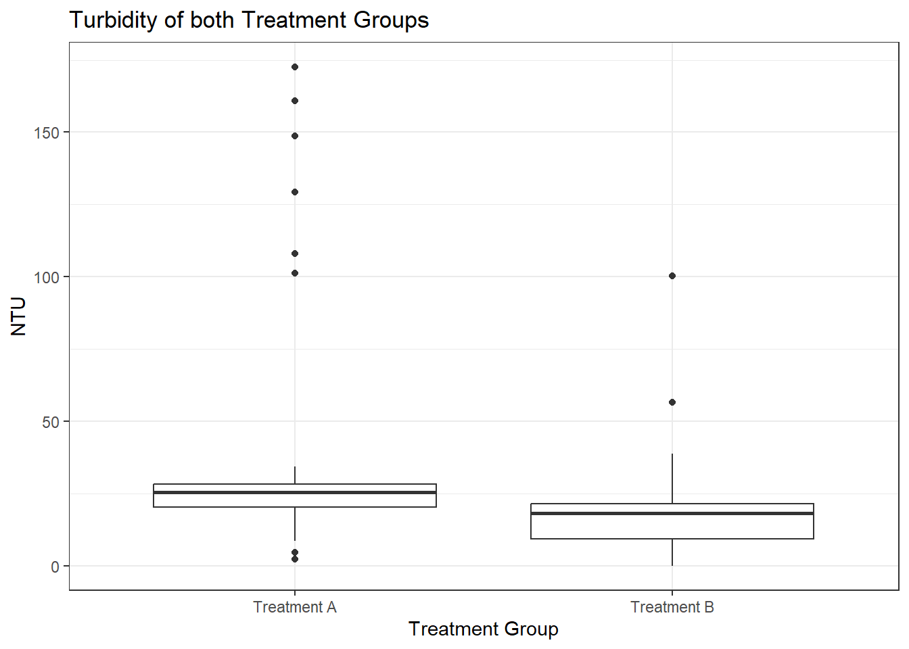
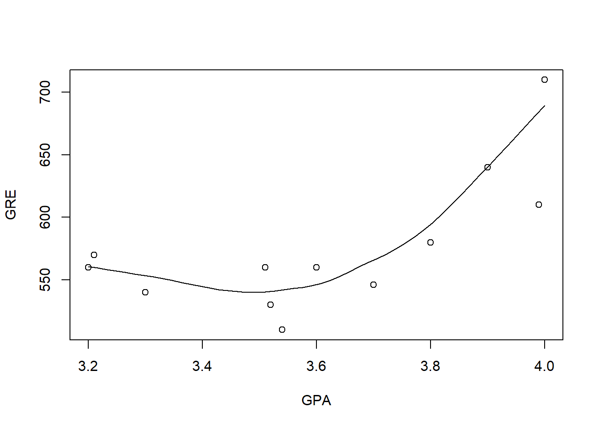
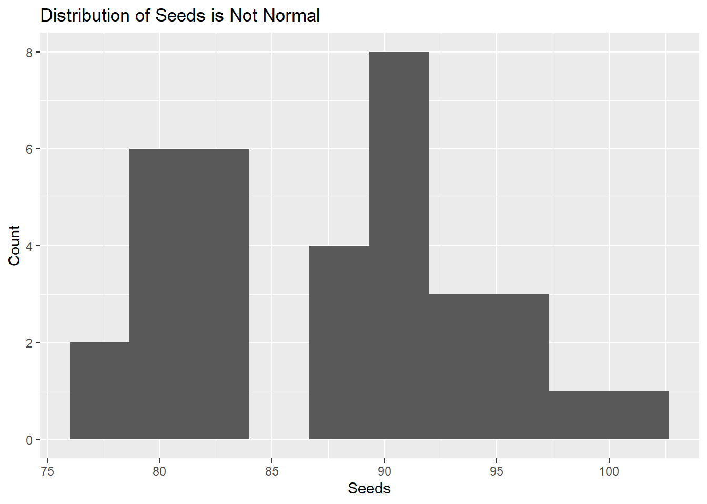
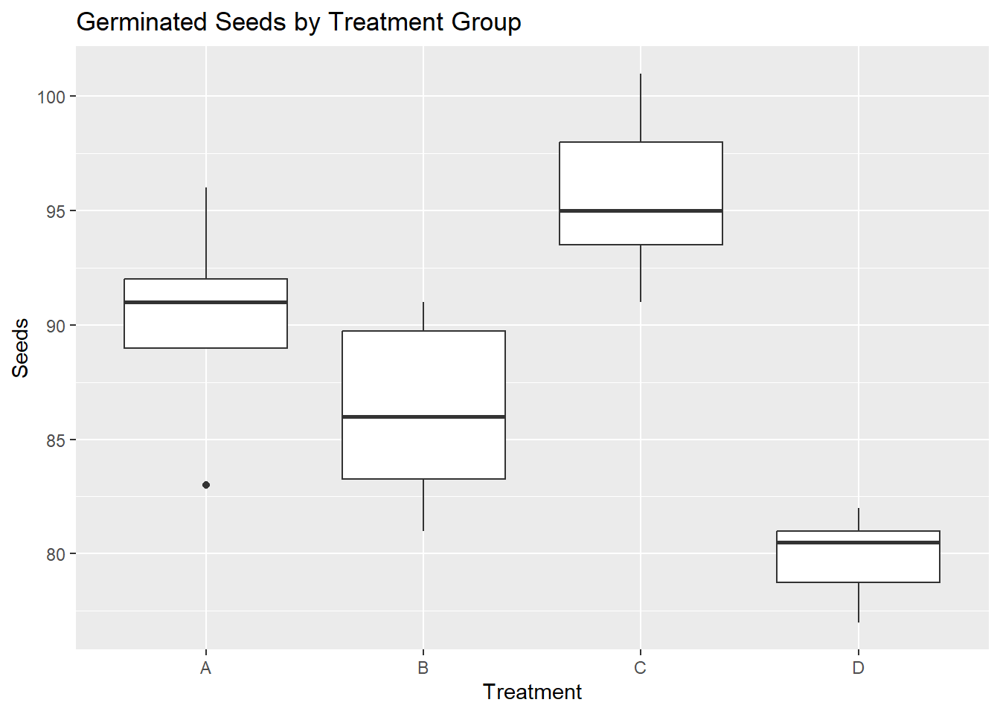

For each of the following questions, please provide your analysis and an interpretation (e.g., written as you would in a scientific publication). If it helps to describe your result, add tables or figures to help make your case. For every case, explain why you chose the particular analysis you did and demonstrate the reasons from the data.
The FDA has suggested a change in a medication that has been shown to have detrimental side effects in half of the patients. A clinical trial was conducted with nineteen patients; only three reported side effects. Did the change make a significant difference?
meds <-binom.test(c(16, 3), p =0.50)meds
Exact binomial test
data: c(16, 3)
number of successes = 16, number of trials = 19, p-value = 0.004425
alternative hypothesis: true probability of success is not equal to 0.5
95 percent confidence interval:
0.6042154 0.9661738
sample estimates:
probability of success
0.8421053
The change made a significant difference. I chose to run a binomial test because there are only two “states”, no side effects or side effects. The mean number of people not experiencing side effects before the change was 50%, and the mean number of people not experiencing side effects in the trial was 84%, with a 95% confidence interval ranging from 60%-97%. The binomial test run had a p-value of 0.004, meaning that there is enough evidence to reject the null hypothesis that the mean of the clinical trial was the same as the mean before the change.
Two different environmental remediation treatments are evaluated for the impacts on turbidity (measured using the Nephelometric Turbidity Unit or NTU). For regulatory reasons, turbidity is binned into four groups based on NTU: 0-15 ntu, 16-22 ntu, 23-30 ntu, and 31+ ntu. Do both treatments have the same impact on turbidity? Explain.
turb <-read_csv("ntu_data.csv", show_col_types =FALSE)turb %>%ggplot(aes(x = NTU))+geom_histogram(bins =10)+labs(y ="Count",title ="Distribution of NTU is Not Normal")

turbw <-wilcox.test(NTU ~ Treatment, data = turb)turbw
Wilcoxon rank sum test with continuity correction
data: NTU by Treatment
W = 2765, p-value = 1.285e-05
alternative hypothesis: true location shift is not equal to 0
turb %>%ggplot(aes(x = Treatment,y = NTU))+geom_boxplot()+labs(title ="Turbidity of both Treatment Groups",x ="Treatment Group")+theme_bw()

The two treatments do not have the same impact on turbidity. I chose to run a Wilcoxon test because there are two treatments, and the NTU is not normally distributed. The Wilcoxon test found a p-value of p = 1.29e-5, so there is enough support to reject the null hypothesis that the medians of the two treatment groups are equal. This means that the median for treatment group A is significantly larger than the median for treatment group B.
A dozen graduate students tried to determine if there was a relationship between their undergraduate GPA and their scores on the Graduate Records Examination. Look at these data and determine the extent to which they are related. Explain.
library(graphics)grads <-read_csv("grad_school.csv", show_col_types =FALSE)grad <-lm(GRE ~ GPA, data = grads)summary(grad)
Call:
lm(formula = GRE ~ GPA, data = grads)
Residuals:
Min 1Q Median 3Q Max
-57.842 -24.848 -9.777 28.297 82.827
Coefficients:
Estimate Std. Error t value Pr(>|t|)
(Intercept) 111.25 165.16 0.674 0.516
GPA 128.98 45.68 2.824 0.018 *
---
Signif. codes: 0 '***' 0.001 '**' 0.01 '*' 0.05 '.' 0.1 ' ' 1
Residual standard error: 42.65 on 10 degrees of freedom
Multiple R-squared: 0.4436, Adjusted R-squared: 0.388
F-statistic: 7.974 on 1 and 10 DF, p-value: 0.01804
Call:
loess(formula = GRE ~ GPA, data = grads)
Number of Observations: 12
Equivalent Number of Parameters: 4.44
Residual Standard Error: 32
with(grads, scatter.smooth(GPA, GRE))

As GPA increases, so does GRE. I decided to use a loess model for this question because the residuals of the linear model weren’t normally distributed.
You are looking at fruit yield on dogwood. You designed an experiment with four different treatments and measured the total yield in germinated seeds. Are there differences in yield? Explain.
dog <-read_csv("DogwoodSeeds.csv", show_col_types =FALSE)dog %>%ggplot(aes(x = Seeds))+geom_histogram(bins =10)+labs(y ="Count",title ="Distribution of Seeds is Not Normal")

dog %>%ggplot(aes(x = Treatment,y = Seeds))+geom_boxplot()+labs(title ="Germinated Seeds by Treatment Group")

dogs <-kruskal.test(Seeds ~ Treatment, data = dog)dogs
Kruskal-Wallis rank sum test
data: Seeds by Treatment
Kruskal-Wallis chi-squared = 25.629, df = 3, p-value = 1.141e-05
There are differences in the number of seeds germinated between the different treatment groups. I decided to use Kruskal-Wallis Test because the distribution of the response variable was not normal. The K-W test found a p-value of 1.14e-5, so there is enough evidence to reject the null hypothesis that the medians of the four treatment groups are the same. This means that at least one of the four treatment groups has a median different than one of the other treatment groups.